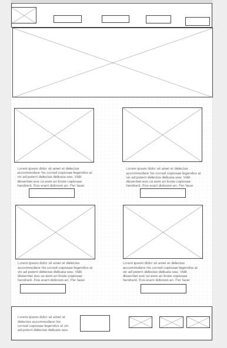
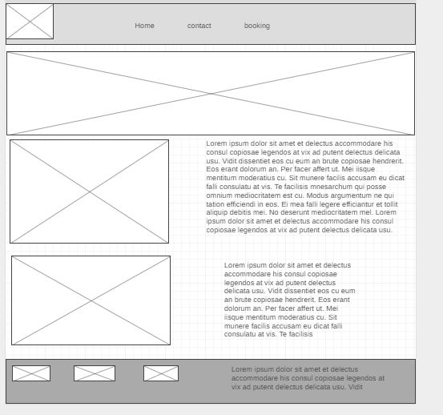
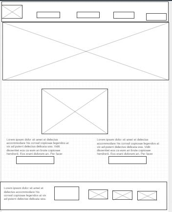

Overview
Purpose
To creat a consumer friendly website where everyone gets product and services at the comfort of their home. Not just at their homes, companies can get their utilites fix without getting to hire any special person for it
Audience
My audience are single parents, parents who worked double shift and could desired for utilites to be taken care of in their homes, companies, house-holds and individuals
Branding
Website Logo
Style Guide
Color Palette
Palette URL:
https://coolors.co/f72585-b5179e-7209b7-560bad-480ca8-3a0ca3-3f37c9-4361ee-4895ef-031e26| Primary | Secondary | Accent 1 | Accent 2 |
|---|---|---|---|
| #560BAD | #480CA8 | #B5179E | #3A0CA3 |
Typography
Heading Font: Poppins
Paragraph Font: Lato
Normal paragraph example
Colored paragraph example
services provided varies from laundry home services, catering services, nanny services, shopping hair care, hair making and barbing, cleaning service and taxi, all at the comfort of your home.
Colored paragraph example
The best houslhold/utilities service provided in the whole of Nigeria. we provide exclusive service and our servicw providers are people with no criminal records
Navigation
Site Map
Content
Why will people visit our site?
People will visit our site when they need their utility services taken care of. Our site provides a range of services from getting a housekeeper, to getting a driver to drive them around town, and even if they are new in town, and want a driver and a tour guide, our site, is just a click away. People will also visit our site to get a cook who could help them cook or some who could get to the mall and do the shopping and deliver them to the house. Whatever your utility needs, a visit to our site gets those utility- services delivered to their doorpost.
The questions that will be answered at our sites
let’s say you needed a hairdresser to go get your hair made for an event. Or you need someone to get to the grocery store and pick up some groceries and deliver it to your doorpost for you. This site answers questions like, how can I get my groceries without having to leave my house? How can I get my hairdo, without going to the saloon? how can I get a nanny or a housekeeper or a cook to do my meals, without getting to leave my house? All utility-related questions are expected to be answered by people visiting this site.
What types of activities will visitors will complete on our site?
The activities to be completed on this site includes, getting to see our product and services and filling out the needed utility form to get linked up with the next available service provider for your utility. There is a feedback and rating section where we want to know about a customer’s feedback and we want to know what more services we can include as we are bent on providing more efficient services to clients
information necessary to complete any actions our site offers?
Once you are registered on our site, we need information about your addresses, national identity number for security checks, and your emails and contact number.
Why visit our site
This site will have a high service rating from people that have used this site before. This will compel more visitors to come and use this site instead of using another site. Then again, this site provides a high level of security for both the visitors and the service provided. For instance, through your national identification number(nin), we will conduct a security background check on you to ensure that you have a clean sheet before accepting you as a service provided on our site. Also, we will train our service providers to keep their phone GPS and location on track whenever they are working for any home. This top-notch service delivery and high-security consciousness will make our visitors feel safe and have the deliberate choice of getting information from another site.
Home page

excellent services
 Our services
Our services
we provide wide range of utility services as seen in the pictures
Images for the Page 2
taxi services

electrical services
laundry services

housekeeping services
Other of our product and services are
[Written copy for the Page 3 here]
Images for the Page 3
.jpg)
Catering and cooking

shopping and delivery services
Wireframes
Create three wireframes for your site. One for each page and list them here
Home
[Any additional details about home that the wireframe does not make clear]
product and service
[Any additional details about page 2 that the wireframe does not make clear]
clients and customers
[Any additional details about page 3 that the wireframe does not make clear]
